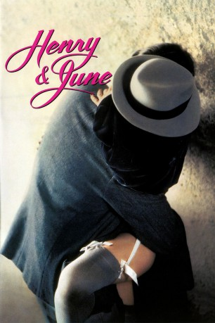

#7603 Henry & June
Auszeichnungen: für 1 Oscars nominiert
 
 IMDB-Wertung: 6.3 / 10
IMDB-Wertung: 6.3 / 10  Tomatometer: 60
Tomatometer: 60  Metascore: 0
Metascore: 0 
Die lange Zeit unter Verschluß gehaltener Tagebücher der Anais Nin und die autobiographischen Romane des Skandalautors Henry Miller lieferten Stoff zu diesem Film voller Erotik und Leidenschaft. In Paris entwickelt sich zwischen der Schriftstellerin Anais Nin, ihrem Kollegen Henry Miller und dessen Frau June ein explosives Dreiecksverhältnis. Im Mittelpunkt steht June, die sich mit ihrem Mann und mit Anais hemmungslos in die Welt der körperlichen Liebe stürzt. Eine Beziehung, die ihr Leben völlig verändert...
Jahr: 1990
Dauer: 136 Minuten
FSK: 16
Land: USA Studio: Universal PicturesTonspuren:
Untertitel: Deutsch,
Auflösung: 1080p (1920x1080) Größe: 10065 MB
Genre: Drama, Biographie
Regisseur:  Philip Kaufman
Philip Kaufman
Drehbuch: Anaïs Nin
Soundtrack: Claude Debussy
Darsteller:
 Fred Ward als Henry Miller
Fred Ward als Henry Miller Uma Thurman als June Miller
Uma Thurman als June Miller- Maria de Medeiros als Anaïs Nin
 Richard E. Grant als Hugo
Richard E. Grant als Hugo Kevin Spacey als Osborn
Kevin Spacey als Osborn Féodor Atkine als Spanish Dance Instructor
Féodor Atkine als Spanish Dance Instructor- Pierre Étaix als Henry's Friend No. 1
 Brigitte Lahaie als Henry's Whore
Brigitte Lahaie als Henry's Whore Gary Oldman als Pop
Gary Oldman als Pop- Jean-Philippe Écoffey als Eduardo
- Bruce Myers als Jack
- Juan Luis Buñuel als Publisher / Editor
- Sylvie Huguel als Emilia
- Artus de Penguern als Brassaï
- Pierre Edernac als Henry's Friend No. 2 - Magician
- Gaëtan Bloom als Henry's Friend No. 3 - Magician
- Alexandre De Gall als Henry's Friend No. 4 - Clown
- Karine Couvelard als Osborn's Girlfriend
- Louis Bessières als Accordionist
- Erika Maury-Lascoux als Contortionist No. 1
- Claire Joubert als Contortionist No. 2
- Maïté Maillé als Frail Prostitute
- Annie Fratellini als The Patronne
- Frank Heiler als Steamship Agent
- Stephanie Leboulanger als Prostitute Brushing Long Hair
- Suzy Palatin als Bal Negre Performer
- Samuel Ateba als Black Musician for Quat'z Arts Ball
- Marc Maury als Man in Silent Film
- Annie Vincent als Fat Prostitute
- Liz Hasse als Jean
- Jean-Marc Cozic als Un jeune homme devant l'hôtel , uncredited
Datei: X:\1990\Henry & June (1990, FSK16, 1920x1080).mkv seit 23.11.2017
Festplatte: HD 1987-1991
 Es gibt insgesamt 52 Filme in der Gruppe '1990'
Es gibt insgesamt 52 Filme in der Gruppe '1990'